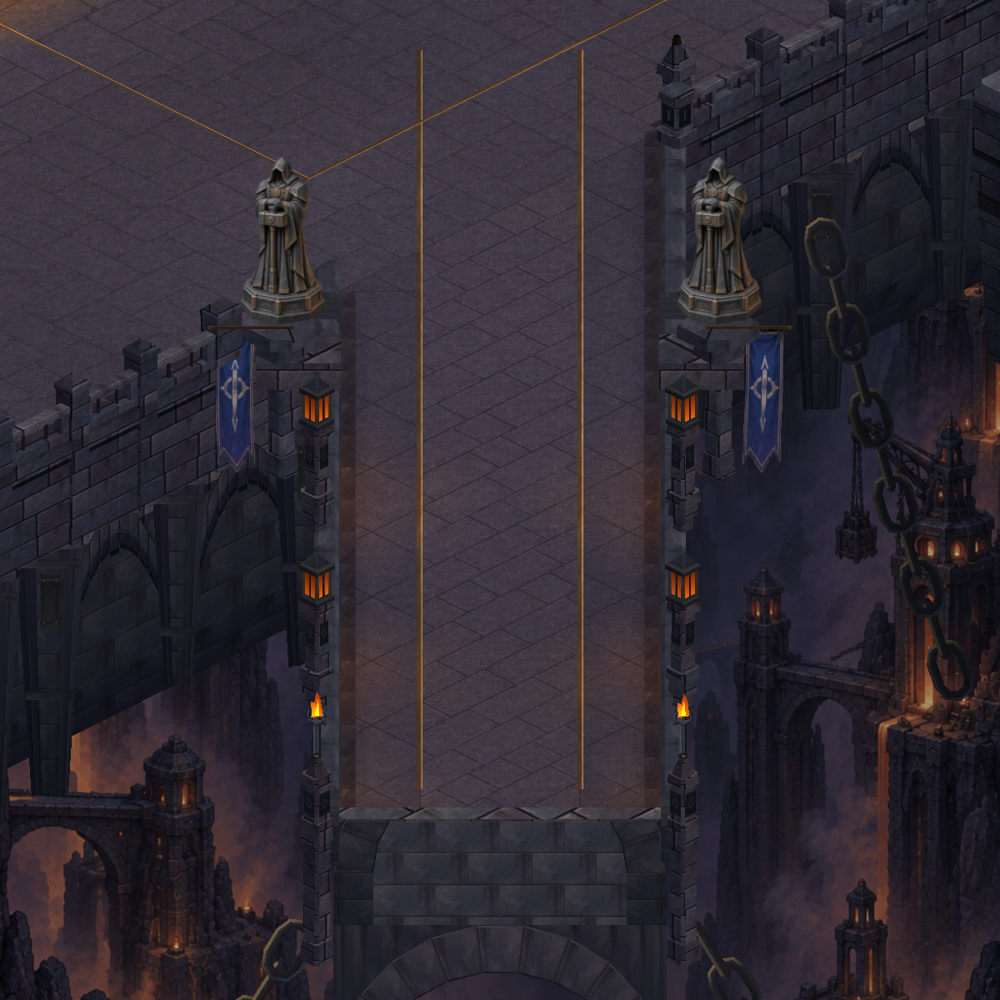
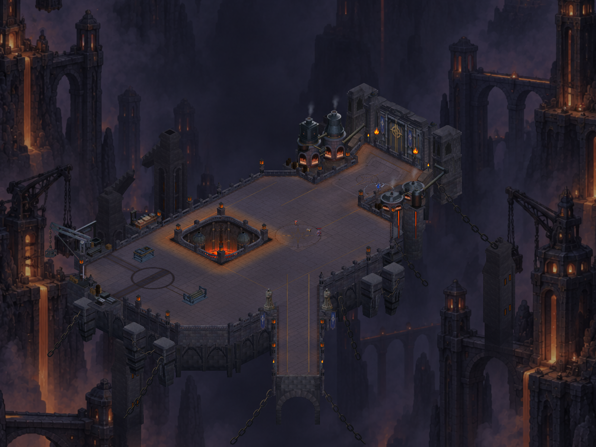

CRYPTFORGE · GERÇEK UNITY GÖRÜNTÜLERİ
Giriş köprüsü ve çalışma avlusu
Köprü girişini ve çalışma avlusunun ekipmanlarını aynı kamera ve ölçekle karşılaştırıyoruz.
Bunlar Unity görüntüleridir; telefon ekran görüntüsü veya kalabalık savaş performans ölçümü değildir. Yeni Unity görüntüleri incelendi. Köprü kemerleri ve avlu ekipmanları daha belirgin; yan korkulukların uzaktan etkisi sınırlı. Referansın tüm ayrıntıları henüz tamamlanmadı. Kapsam ve kayıt.

ÖnceBu görünümün gerçek Unity yakalaması henüz yok.
Aynı kameradan haritanın bütünü
Önce · b91ac1a
Sonra · aynı ölçek
Onaylı referansı tam boy aç · Temel görüntülerin SHA256 kaydı